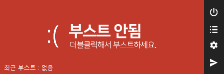
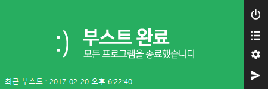
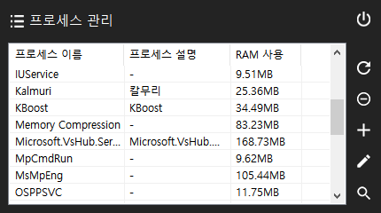

KBoost 소개
실행되고 있는 모든 프로세스를 종료함으로써 현재 진행 중인 작업에 컴퓨터의 모든 자원을 집중시킬 수 있는 프로그램입니다.
주요 기능
- 프로세스 일괄 종료 기능
- 실행 중인 모든 프로세스를 종료하여 컴퓨터의 속도를 향상시켜 줍니다.
- 종료 제외 목록 기능
- 종료되면 안 되는 프로그램이 있을 경우 종료 제외 목록에 추가시켜 일괄 종료 시 종료되지 않도록 할 수 있습니다.
- 선택 종료 기능
- 특정 프로세스만 종료하면 되는 경우 선택 종료 메뉴에서 특정 프로세스만 종료할 수 있습니다.
- 프로그램 시작 시 일괄 종료 기능
- 버튼 누르기가 귀찮으신가요? 이 기능을 통해 엔터 키 하나로 실행 중인 프로그램을 모두 종료시킬 수 있습니다.
- 자동 업데이트 기능
- 최신 버전이 나올 경우 사이트에 접속하지 않고도 프로그램 내에서 업데이트된 프로그램을 다운받으실 수 있습니다.
업데이트 내역
KBoost 4.1 (2018-07-23)
- 부스트 시 폰트가 깨지던 문제 수정
- 시작 창 위치 지정 기능 추가
- 종료 제외 프로세스 수동 편집 시 잘 알려진 프로세스 목록 링크 열기 여부 추가
- 공지사항 및 도움말 기능 추가
- 실행 파라미터 추가 (-instantkill)
프로그램 스크린샷


